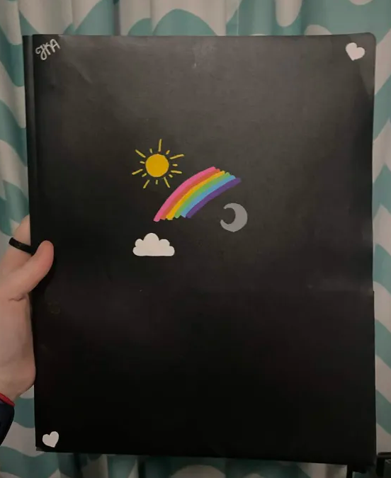

notebook and folder decorating is one of my favorite things to do because it turns something boring into something fun and pretty. the photo is the folder I keep all of my crochet patterns in and I decorated it to make it more aesthetic
get your notebook or folder and think of a design; I sometimes sketch it with pencil before I use my markers. then use paint pens to draw the design on. make sure you are using paint pens because they are more pigmented than regular markers and they don’t rub off very easily.